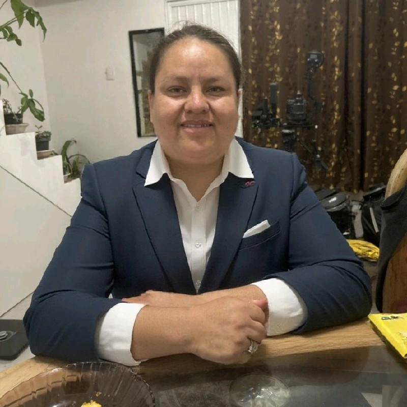

La Importancia de la Planeación Fiscal para PYMES
Una estrategia fiscal bien estructurada puede significar la diferencia entre el crecimiento sostenible y las dificultades financieras para las pequeñas empresas...
Contactar para más informaciónLicenciada en Contaduría Pública | Cédula Profesional 11087841
Cuento con experiencia en contabilidad, auditoría, cobranza y administración pública. Mi trayectoria incluye PROFECO, DIF León, un despacho contable y empresas privadas. Tengo disponibilidad inmediata para trabajar en cualquier municipio de Guanajuato.

Mi nombre es María Fabiola Calvillo Rocha. Soy licenciada en Contaduría Pública por la Universidad de León (2009-2013), con cédula profesional 11087841. He trabajado en administración pública, cobranza, contabilidad y control administrativo.
Mi experiencia gubernamental: Durante 8 años trabajé en instituciones públicas como PROFECO (2020-2024) donde me desempeñé como Enlace Administrativo y Auxiliar PAE, manejando cobro persuasivo y coactivo, transparencia, comunicación social y elaboración de reportes especializados. También trabajé en el Sistema DIF de León (2016-2017) gestionando presupuestos y participando en licitaciones.
Mi experiencia empresarial: He trabajado en diversos sectores incluyendo calzado (Andrea, Dmonas), construcción (Urbanizadora CURG), y despachos contables (Revilla y Asociados), desarrollando expertise en conciliaciones bancarias, nóminas, auditorías internas y externas, manejo de CFDI, y cumplimiento fiscal.
Mi enfoque va más allá de los números: creo firmemente que una buena gestión financiera es la base para el crecimiento económico sostenible y el desarrollo social de nuestra comunidad leonesa.
Mi experiencia profesional incluye:
Creo en el poder transformador de las finanzas cuando se aplican con responsabilidad social y ética profesional.
La honestidad y claridad en cada proceso contable son fundamentales para generar confianza y resultados duraderos.
Me mantengo actualizada en normatividad fiscal y mejores prácticas para ofrecer servicios de vanguardia.
Mi interés en la política me permite entender las necesidades de nuestra comunidad y ofrecer soluciones integrales.
Empoderar a emprendedores, PYMES y organizaciones sociales a través de servicios contables éticos, transparentes e innovadores que impulsen su crecimiento y contribuyan al desarrollo económico de León, Guanajuato.
Ser la contadora de referencia en León para quienes buscan no solo cumplir con sus obligaciones fiscales, sino transformar sus finanzas en una herramienta de crecimiento e impacto social positivo.
Abril 2021 - Diciembre 2024
Acciones de cobro persuasivo y coactivo, integración de expedientes PAE, reportes de recaudación, conciliación de pagos, actualización en APM, asesoría a proveedores, elaboración de reportes especializados.
Febrero 2020 - Marzo 2021
Incidencias de recursos humanos, redacción de oficios, gestión de entrevistas, reportes SIPOTT, programa anual de comunicación social, solicitudes de transparencia, gestión de viáticos, licitaciones en adquisiciones.
Marzo 2018 - Octubre 2019
Captura de pólizas, conciliaciones bancarias, pagos previsionales, emisión de reportes y facturas, pedidos de compra, presupuestos para licitaciones de obras, correspondencia con SAPAL.
Enero 2017 - Marzo 2018
Revisión de cuentas por pagar y cobrar, conciliaciones bancarias, pagos previsionales, captura de egresos e ingresos, emisión de facturas, validación CFDI, elaboración de nóminas, altas IMSS y SUA.
Enero 2016 - Enero 2017
Bitácora diaria, redacción de oficios, manejo de Opergob, control de presupuesto, participación en asambleas para licitaciones públicas.
Septiembre 2012 - Septiembre 2014
Captura de pólizas, conciliaciones bancarias, pagos previsionales, emisión de reportes y facturas, validación CFDI, ajustes a estados financieros, auditorías internas y externas, redacción de oficios.
Enero 2005 - Julio 2005
Inicio de carrera profesional: captura de pólizas, conciliaciones bancarias, pagos previsionales, emisión de reportes y facturas, ordenar pedidos de compra.
Universidad de León (2009-2013)
Licenciatura en Contaduría Pública - Cédula Profesional: 11087841. Bachillerato VIBA San Pedro (2002-2005). Telesecundaria 126 San Juan de Otates (1999-2002).
Sector Público - 2021-2024
Especialización en cobro persuasivo y coactivo de multas administrativas. Integración de expedientes PAE, reportes de recaudación, conciliación de pagos y asesoría a proveedores para cumplimiento de obligaciones fiscales.
Administración Pública - 2020-2021
Gestión de recursos humanos, redacción de oficios, programa anual de comunicación social, manejo de solicitudes de transparencia, gestión de viáticos y coordinación en procesos de licitación pública.
Sector Construcción - 2018-2019
Auxiliar administrativo especializada en presupuestos para licitaciones de obras, captura de pólizas contables, conciliaciones bancarias, emisión de reportes financieros y correspondencia con organismos como SAPAL.
Servicios Contables - 2012-2014
Auxiliar contable con responsabilidades en auditorías internas y externas, ajustes a estados financieros, validación de CFDI ante SAT, revisión de cumplimiento de requisitos fiscales y redacción de oficios especializados.
Desarrollo Social - 2016-2017
Asistente administrativo en institución de asistencia social, manejo de plataforma Opergob, control de presupuesto público, participación en asambleas para licitaciones y elaboración de bitácoras administrativas.
Sector Manufacturero - 2005, 2017-2018
Experiencia inicial como cajera (2005) y posterior como auxiliar administrativo (2017-2018). Elaboración de nóminas, altas ante IMSS y SUA, revisión de cuentas por pagar y cobrar, validación de CFDI y captura de ingresos/egresos.
"María Fabiola transformó completamente la gestión financiera de mi restaurant. Su enfoque personalizado y conocimiento profundo nos ayudó a crecer de manera sostenible. Es más que una contadora, es una asesora estratégica."
"Su expertise en consultoría política fue fundamental para nuestra campaña. Mantuvo la transparencia total y nos dio la confianza de que cada peso estaba perfectamente documentado. Profesionalismo excepcional."
"Como freelancer, necesitaba alguien que entendiera mi modelo de negocio único. Fabiola no solo optimizó mi estructura fiscal, sino que me educó para tomar mejores decisiones financieras. ¡Recomendada al 100%!"
"Su compromiso con organizaciones sociales es genuino. Nos ayudó a implementar sistemas de transparencia que fortalecieron la confianza de nuestros donadores. Es una profesional con corazón social."
"Los talleres de educación financiera que imparte son excepcionales. Logré estructurar mi startup correctamente desde el inicio. Su método de enseñanza es claro y práctico."
"Su reestructuración contable salvó nuestra empresa familiar. Nos dio claridad financiera y estrategias que mejoraron nuestros márgenes significativamente. Una inversión que se pagó sola."
Ofrezco servicios integrales que incluyen: elaboración de declaraciones fiscales, asesoría en deducciones y optimización fiscal, contabilidad para PYMES, servicios para freelancers, auditorías para ONGs, consultoría para campañas políticas, talleres de educación financiera y planeación estratégica empresarial.
Mis honorarios varían según el servicio y complejidad. Ofrezco consultas gratuitas de 30 minutos para evaluar necesidades. Manejo tarifas competitivas con opciones de pago mensual, trimestral o por proyecto. Acepto transferencias, efectivo y pagos con tarjeta.
Sí, trabajo con clientes de todo México a través de herramientas digitales. Para empresas del Bajío ofrezco servicios presenciales. Tengo experiencia con normativas fiscales nacionales y puedo atender empresas de cualquier estado.
Dependiendo del servicio: RFC, acta constitutiva (empresas), estados financieros anteriores, facturas de ingresos y gastos, contratos relevantes, estados de cuenta bancarios. Te proporciono una lista específica según tu caso durante la consulta inicial.
Sí, manejo servicios de urgencia con recargos aplicables. Puedo gestionar declaraciones extemporáneas, cálculo de multas y recargos, así como gestiones ante el SAT para regularizar situaciones fiscales pendientes.
Mantengo estricta confidencialidad profesional según normativas del Colegio de Contadores Públicos. Utilizo sistemas seguros para manejo de documentos, contratos de confidencialidad cuando se requiere y protocolos de seguridad digital para información sensible.
Mi enfoque combina expertise técnico con compromiso social. Ofrezco educación financiera, transparencia total, asesoría estratégica más allá del cumplimiento fiscal, especialización en organizaciones sociales y campañas políticas, además de atención personalizada con visión de desarrollo comunitario.
Sí, imparto talleres de educación financiera para empresas, emprendedores y organizaciones. Temas incluyen: finanzas personales, planeación fiscal, manejo de flujo de efectivo, comprensión de estados financieros y cumplimiento fiscal básico. Disponibles modalidades presencial y virtual.
Secretaría de Educación Pública
No. 11087841Licenciatura en Contaduría Pública
Egresada 2013Conciliaciones, pólizas, facturación y revisión fiscal
Sector privadoCobranza, expedientes, presupuestos y transparencia
PROFECO y DIF LeónPROFECO - 4 años de servicio
2020-2024Múltiples empresas y despachos
Experiencia verificable477 498 0061
477 498 0061
calvillofabiola19@gmail.com
Disponible de inmediato en todo el estado de Guanajuato
📍 Disponibilidad laboral inmediata en cualquier municipio de Guanajuato.
Al enviar este formulario, acepta que sus datos serán tratados conforme a nuestra Política de Privacidad. Sus datos están protegidos y nunca serán compartidos con terceros.
Una estrategia fiscal bien estructurada puede significar la diferencia entre el crecimiento sostenible y las dificultades financieras para las pequeñas empresas...
Contactar para más informaciónLa rendición de cuentas es fundamental para generar confianza en donadores y beneficiarios. Aquí algunas mejores prácticas...
Contactar para más informaciónLos jóvenes emprendedores necesitan herramientas financieras sólidas para convertir sus ideas en negocios prósperos y sostenibles...
Contactar para más informaciónC.P. María Fabiola Calvillo Rocha
Cargando servicios contables...